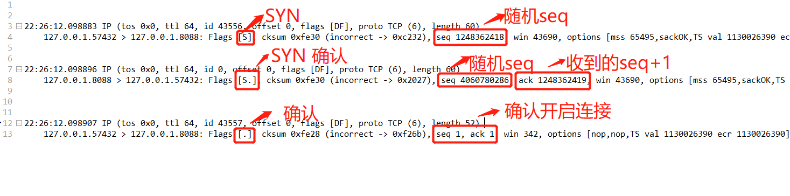
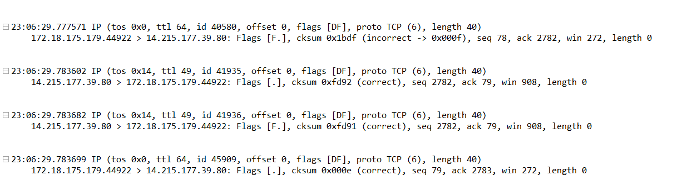
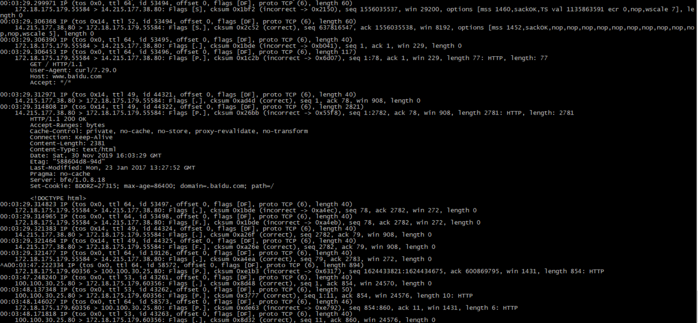

TCP是什么
TCP(Transmission Control Protocol 传输控制协议)是一种面向连接(连接导向)的、可靠的、 基于IP的传输层协议。
TCP有6种标示:SYN(建立联机) ACK(确认) PSH(传送) FIN(结束) RST(重置) URG(紧急)
TCP的三次握手
第一次握手：客户端向服务器发送请求报文，这时报文首部中的同部位SYN=1,并生成一个随机序列值seq=n。客户端进入syn-sent(同步已发送)状态，等待服务器确认
第二次握手：TCP服务器收到请求报文后，如果同意连接，则发出确认报文。确认报文中应该 ACK=1,SYN=1,确认号ACK=n+1,同时自己也随机生成一个seq=m，此时服务器进入SYN-RCVD(同步收到)状态。
第三次握手：TCP客户端进程收到确认后，还要向服务器给出确认。确认报文的ACK=1,ack=m+1,
TCP的三次握手抓包
使用nc -l localhost 8088 监听8088端口
客户端使用nc -v localhost 8088 连接8088端口
再开个终端使用 tcpdump -i lo -vv -nnn tcp port 8088 抓包8088 端口tcp连接
抓包数据

为什么需要三次握手
端口 client发送了一个请求连接的报文，但是网络不好，这个请求没有立即达到服务端，客户端没有收到服务器的确认消息后，任务该请求报文已失效了，但是过了一会之后server收到报文，还是会像client发送确认的报文，表示同意连接。如果这里不用三次握手，那么只要server发出确认报文，新的连接就
建立了，但其实这个请求client已经任务失效了，不会理睬server的确认信息，也不会像服务器发出确认的请求，但是server的请求已经建立了，并一直等待client的数据，这样会浪费server的资源，采用三次握手就是为了防止这种情况的发生，server会因为收不到确认的报文，而不会建立连接。
举个列子：就好比找工作的时候，你通过手机问面试官，我能去面试吗，面试官说可以，你收到面试官的确认，然后你在确认面试时间，那就可以愉快的去面试了。
四次挥手
第一次挥手：TCP client发送一个FIN ,用来关闭到服务端的连接，client进入FIN_WAIT_1状态
client进程发出连接释放报文，并且停止发送数据。释放报文首部，FIN=1,其序列号为seq=x
第二次挥手：TCP server 收到FIN 后，发送一个ACK 确认,server进入CLOSE_WAIT状态，客户端收到ACK后会进入FIN_WAIT_2状态
这时候处于半关闭状态，即客户端已经没有数据要发送了，但是服务器若发送数据，客户端依然要接受
第三次挥手：TCP server 发送一个FIN,用来关闭server到client的连接,server进入LAST_ACK状态。
服务器将最后的数据发送完毕
第四次挥手：TCP client收到FIN后，client进入TIME_WAIT状态，接着发送一个ACK给server，server进入CLOSED状态
TCP连接还没有释放，必须经过2∗∗MSL（最长报文段寿命）的时间后，当客户端撤销相应的TCB后，才进入CLOSED状态
四次挥手抓包
开个终端使用 tcpdump -vv -nnn tcp port 80 端口tcp连接
再另一个终端里面使用抓包数据

为什么需要四次挥手
终端为了确保数据能够完全输出，关闭连接时，当收到主动方的FIN报文通知时，它仅仅表示主动方是没有数据需要发送了，但是被动方可能还需要发送数据，所以不会马上关闭SOCKET。于是被动方只发送ACK确认报文，继续发送一些数据给主动方，然后再发送FIN报文，此时就可以关闭连接了
一次网页访问的抓包
